The name of the textbook highlights an important theme: the synthesis between algebra and geometry. It will be very important to us to understand systems of linear equations both algebraically (writing equations for their solutions) and geometrically (drawing pictures and visualizing).
The term “algebra” was coined by the \(9\) th century mathematician Abu Ja ’ far Muhammad ibn Musa al-Khwarizmi. It comes from the Arabic word al-jebr, meaning reunion of broken parts.
Often it is enough to know some information about the set of solutions, without having to solve the equations in the first place. For instance, does there exist a solution? What does the solution set look like geometrically? Is there still a solution if we change the \(26\) to a \(27\text{?}\)
This text is roughly half computational and half conceptual in nature. The main goal is to present a library of linear algebra tools, and more importantly, to teach a conceptual framework for understanding which tools should be applied in a given context.
The subtle part of the subject lies in understanding what computation to ask the computer to do for you — it is far less important to know how to perform computations that a computer can do better than you anyway.
The following diagram represents traffic flow around the town square. The streets are all one way, and the numbers and arrows indicate the number of cars per hour flowing along each street, as measured by sensors underneath the roads.
Four intersections form the corners of a square. Internal one-way streets carry unknown hourly flows: \(x\) across the top from left to right, \(y\) down the right side, \(z\) across the bottom from right to left, and \(w\) up the left side. At the upper-left intersection, 120 cars per hour enter from the left and 250 leave upward. At the upper-right intersection, 120 enter from above and 70 leave to the right. At the lower-right intersection, 530 enter from the right and 390 leave downward. At the lower-left intersection, 115 enter from below and 175 leave to the left.
There are no sensors underneath some of the streets, so we do not know how much traffic is flowing around the square itself. What are the values of \(x,y,z,w\text{?}\) Since the number of cars entering each intersection has to equal the number of cars leaving that intersection, we obtain a system of linear equations:
\begin{equation*}
\left\{
\begin{alignedat}{4}
w &{}+{}& 120 &{}={}& x &{}+{}& 250, \\
x &{}+{}& 120 &{}={}& y &{}+{}& 70, \\
y &{}+{}& 530 &{}={}& z &{}+{}& 390, \\
z &{}+{}& 115 &{}={}& w &{}+{}& 175.
\end{alignedat}
\right.
\end{equation*}
What ratio of the molecules is needed to sustain the reaction? The following three equations come from the fact that the number of atoms of carbon, hydrogen, and oxygen on the left side has to equal the number of atoms on the right, respectively:
If you know the rabbit population in 2016 (in terms of the number of first, second, and third year rabbits), then what is the population in 2017? The rules for reproduction lead to the following system of equations, where \(x,y,z\) represent the number of newborn, first-year, and second-year rabbits, respectively:
A common question is: what is the asymptotic behavior of this system? What will the rabbit population look like in 100 years? This turns out to be an eigenvalue problem.
Figure0.0.7.Left: the population of rabbits in a given year. Right: the proportions of rabbits in that year. Choose any values you like for the starting population, and click “Advance 1 year” several times. What do you notice about the long-term behavior of the ratios? This phenomenon turns out to be due to eigenvectors.
Its orbit around the sun is elliptical; it is described by an equation of the form
\begin{equation*}
x^2 + By^2 + Cxy + Dx + Ey + F = 0.
\end{equation*}
What is the most likely orbit of the asteroid, given that there was some significant error in measuring its position? Substituting the data points into the above equation yields the system
There is no actual solution to this system due to measurement error, but here is the best-fitting ellipse:

A coordinate grid from \(x=-6\) to \(x=6\) and \(y=-4\) to \(y=4\) shows the measured points \((0,2)\text{,}\)\((2,1)\text{,}\)\((1,-1)\text{,}\)\((-1,-2)\text{,}\)\((-3,1)\text{,}\) and \((-1,1)\text{.}\) A tilted red ellipse is fitted to the six points. Its displayed equation is \(266x^2+405y^2-178xy+402x-123y-1374=0\text{.}\)
Each web page has some measure of importance, which it shares via outgoing links to other pages. This leads to zillions of equations in zillions of variables. Larry Page and Sergei Brin realized that this is a linear algebra problem at its core, and used the insight to found Google. We will discuss this example in detail in [provisional cross-reference: stochastic-matrices].
There are a number of different categories of ideas that are contained in most sections. They are listed at the top of the section, under Objectives, for easy review. We classify them as follows.
Recipes: these are algorithms that are generally straightforward (if sometimes tedious), and are usually done by computer in real life. They are nonetheless important to learn and to practice.
Vocabulary words: forming a conceptual understanding of the subject of linear algebra means being able to communicate much more precisely than in ordinary speech. The vocabulary words have precise definitions, which must be learned and used correctly.
Essential vocabulary words: these vocabulary words are essential in that they form the essence of the subject of linear algebra. For instance, if you do not know the definition of an eigenvector, then by definition you cannot claim to understand linear algebra.
Theorems: these describe in a precise way how the objects of interest relate to each other. Knowing which recipe to use in a given situation generally means recognizing which vocabulary words to use to describe the situation, and understanding which theorems apply to that problem.
Pictures: visualizing the geometry underlying the algebra means interpreting and drawing pictures of the objects involved. The pictures are meant to be a core part of the material in the text: they are not just a pretty add-on.
This textbook is exclusively targeted at Math 1553 at Georgia Tech. As such, it contains exactly the material that is taught in that class; no more, and no less: students in Math 1553 are responsible for understanding all visible content. In the online version some extra material (most examples and proofs, for instance) is hidden, in that one needs to click on a link to reveal it, like this:
Hidden content is meant to enrich your understanding of the topic, but is not an official part of Math 1553. That said, the text will be very hard to follow without understanding the examples, and studying the proofs is an excellent way to learn the conceptual part of the material. (Not applicable to the PDF version.)
Finally, we remark that there are over 140 interactive demos contained in the text, which were created to illustrate the geometry of the topic. Click the “view in a new window” link, and play around with them! You will need a modern browser. Internet Explorer is not a modern browser; try Safari, Chrome, or Firefox. Here is a demo from [provisional cross-reference: least-squares]:
Every page of the online version has a link on the bottom for providing feedback. This will take you to the GitHub Issues page for this book. It requires a Georgia Tech login to access.